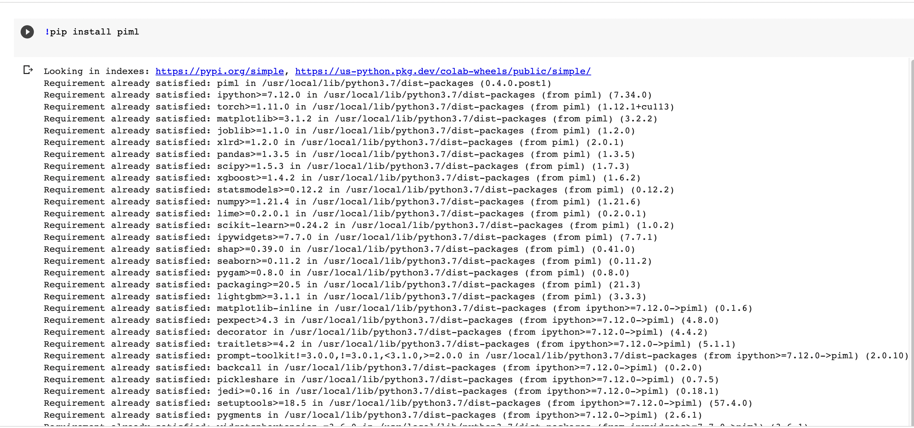
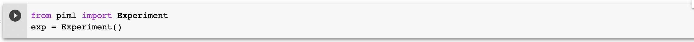
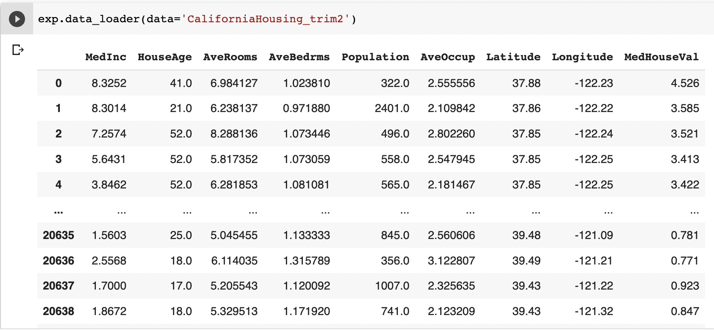
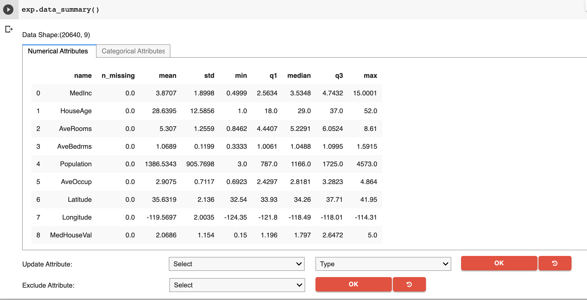
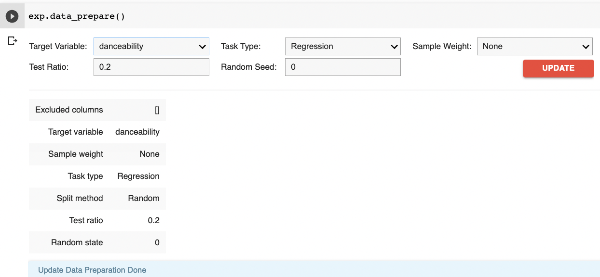
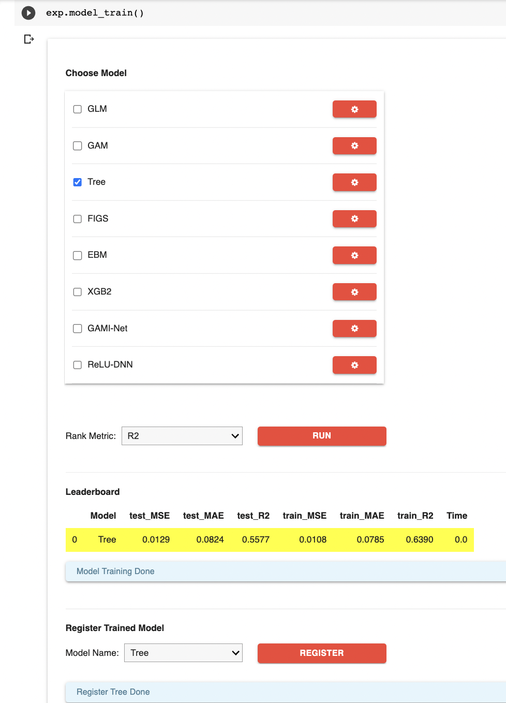
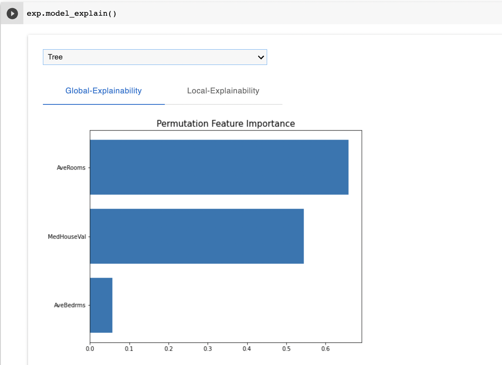
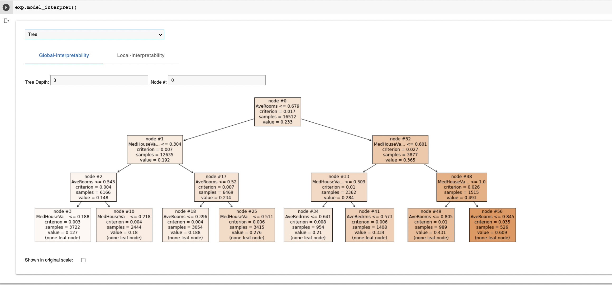
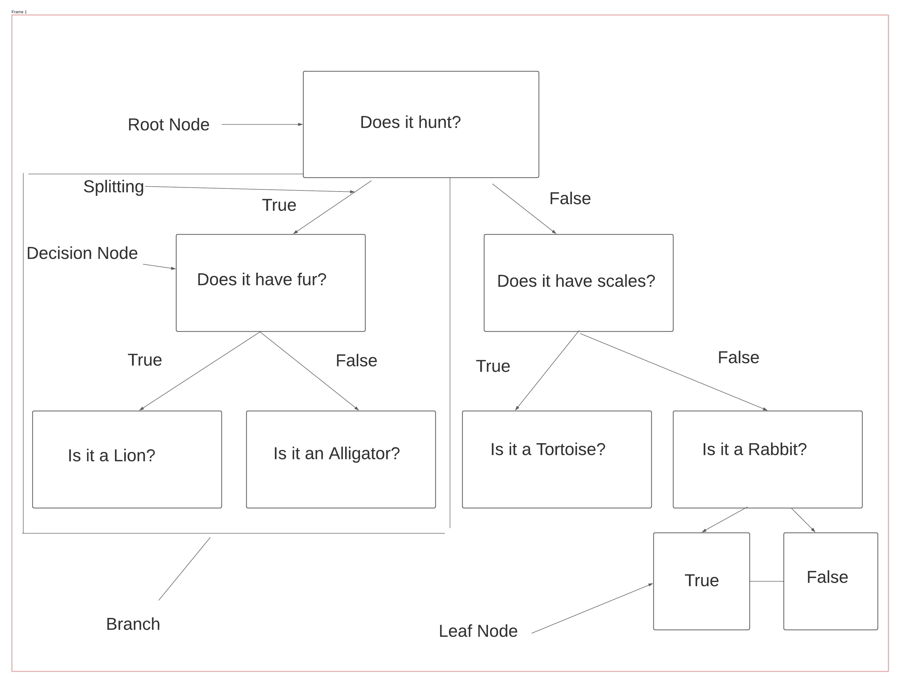

Decision Trees¶
A Decision Tree Explained
A Decision tree is a supervised machine-learning method that helps make predictions or categorizations. A Decision tree is a non-parametric model, meaning it does not require a specification of parameters, and as a result, it can provide a greater number of possible outcomes. Leveraging PiML will allow Data Scientists to quickly implement a Decision Tree model which are one of the most popular learning algorithms among data scientists, for their accuracy, interpretability, and versatility.
Key Terms of a Decision Tree
*Root Node - This is the first node of a decision tree, from where all splitting will occur, similar to a tree’s roots.
*Splitting - The process of splitting a single node into many nodes. For example, a categorical node could be split into night or day, or land or sea.
*Decision/Internal Nodes - When a sub-node splits into further sub-nodes, it’s a decision node.
*Leaf Node - When a sub-node cannot be split further it is called a leaf or terminal node.
*Branch - These are the connections between nodes, each branch represents the outcome of each test from the decision node to the respective leaf node.
*Parent/Child Node - A child node is the subnode of a decision node. Every decision node is a parent node. For example, a body of water would be a parent node, whereas, seas, oceans, lakes, rivers, and waterfalls, would be child nodes.
Example:
To begin a user must typically complete the following tasks: Open Google Colab, Data loading, preparation, and exploration. Below, we will run through how to train a decision tree model using a sample California Housing dataset. (Note: You can use any clean dataset under 10 megabytes of size)
Step 1: Install PiML in Google Colab
{kind=link}
Step 2: Import experiment from PiMl package
{kind=link}
Step 3: Load your data
{kind=link}
Step 4: Summarize your data
{kind=link}
Step 5: Prepare your data
{kind=link}
Step 6: Train your model
{kind=link}
Step 7: Explain your model
{kind=link}
Step 8: Interpret your model
{kind=link}
Figure 2: Binary Classification with Key Terms
{kind=link}
References
- D2013
A. Damianou, Lawrence, N.D Deep Gaussian Processes:Proceedings of the Sixteenth International Conference on Artificial Intelligence and Statistics, in Proceedings of Machine Learning Research 31:207-215
- H2009
T. Hastie, R. Tibshirani and J. Friedman, Elements of Statistical Learning, Second Edition, Section 10.13.2, Springer, 2009.
- G2017
P.Gupta, Decision Trees in Machine Learning
- K2021
A.Kumar, Difference between Parametric vs Non-Parametric models
- CFI2022
CFI Team, Decision Tree
- S2020
C.Singleton, A Beginner’s Guide to Important Topics in AI, Machine Learning, and Deep Learning